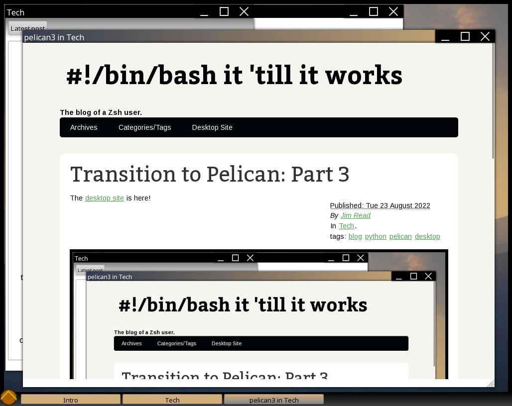

Shortly after I finished transitioning to Pelican, I started to do some research about what the most popular static site generators are. Normally, I would advise doing this the other way around, but my main reason for the shift was familiarity with Pelican combined with a desire to write more …
read moreBlogging via Pelican and an Intro to Static Site Generation
I've posted a series of articles talking about my transition away from hand-coded HTML to Pelican. However, in all of this, I haven't really talked about my own workflow and how I handle writing and posting to the blog. Now that I've more or less finished transferring everything over to …
read moreTransition to Pelican: Part 3
The desktop site is here!

This was the original form of my blog when I first ported it from Blogger to GitHub Pages in 2018. However, the history goes back further than that. Originally, this was the interface created for the computer science club site at my university. We were …
read moreTransition to Pelican, Part 2
Transition to Pelican
In my last post in the tech blog, I talked about how blogging tech is hard, and generally whined about how I managed my site for way too long. My conclusion was that it was my own fault and I should do better. Eventually, I implemented the changes I had …
read moreBlogging is Hard.
Update (2022-08-23): This post was written long before I started using Pelican, and the entire post was originally shown via the desktop site. If you see mentions of the technology showing this post/blog and you want the full experience of what that looked like (and you're on a desktop …
read more